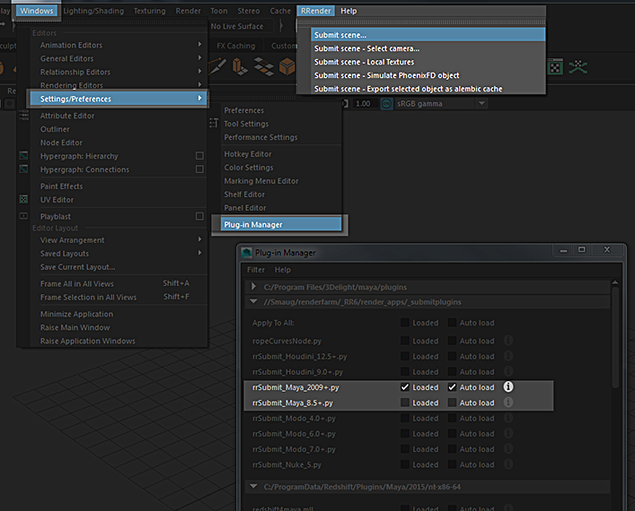

RRender has pre-defined folders for 3rd party plugins and Mental Ray shaders.
They are located in (of course you have to replace the maya version with the one you use):
[RR]\render_apps\renderer_plugins\maya\win_x64\2014\scripts\
[RR]\render_apps\renderer_plugins\maya\win_x64\2014\modules\
[RR]\render_apps\renderer_plugins\maya\win_x64\2014\plug-ins\
[RR]\render_apps\renderer_plugins\maya\win_x64\2014\rendererDesc\
[RR]\render_apps\renderer_plugins\maya\win_x64\2014\mentalray\
If you already have your own plugin paths, then you have to change Maya's Setenv File.
[RR]\render_apps\_setenv\win\maya.bat
maya.env:
If you have a maya.env file, you can place it into the folder
[RR]\render_apps\renderer_plugins\maya\win_x64\2024\
Note: If you define one of the above defined folders (PLUG_IN, SCRIPT, MODULE, MI_CUSTOM_SHADER) in your maya.env, then you have to remove the corresponding line from the setenv file.
Variables set in the maya.bat overwrite maya.env values.
You have two ways to submit Maya scenes.
If you load a Maya scene into the submitter, the submitter asks you if it should start maya batch to read all scene values.
Note: By default Maya creates a project structure if there is none.
It creates a file named workspace.mel and folders like /scenes.If there is a workspace.mel file, then no folder is created
You have to run the rrWorkstationInstaller at least once to install the RR_ROOT environment variable.
It could be that you have to restart the machine for the environment to take effect.
Then you can load the Maya plugin as seen on this screenshot:

There are some known cases in which the Maya crash reports stay open after a render crashed.
You can disable the crash reports by deleting the file Maya/bin/senddmp.exe
Question:
Maya 2014 changes by default the sampling when opening a 2012 scene:
Unified Sampling is enabled unexpectedly when bringing legacy scenes into 2014
In Maya 2014, if you open a scene from a previous version of Maya that renders using the mental ray for Maya renderer, your sampling settings are changed to use Unified Sampling. Some features, such as contour rendering, are not supported with Unified Sampling.
To render such scenes with their previously-saved legacy sampling settings, choose Legacy Sampling Mode in the mental ray Render Settings, Quality tab. The commands: setAttr "miDefaultOptions.miRenderUsing" 2;
is there a way to set the sampling to Legacy mode for my 2014 clients via royal render?
Answer:
RR uses the render scripts made by Autodesk.
In your case:
c:\Program Files\Autodesk\Maya2014\bin\rendererDesc\mrRenderer.xml
You rename it to mymrRenderer.xml any place it to
[RR]\render_apps\renderer_plugins\maya\win_x64\2014\rendererDesc\mymrRenderer.xml
Then dublicate [RR]\render_apps\_config\3D02__Maya2008__Mray.cfg to 3D02__Maya2008__MyMray.cfg
In the file, change
rendererName= mentalRay
to
rendererName= myMentalRay
and all lines with
-r mr
to
-r mymr
At last, you have to edit the file
[RR]\render_apps\renderer_plugins\maya\win_x64\2014\rendererDesc\mymrRenderer.xml
Add your mel line before mayaBatchRenderProcedure .